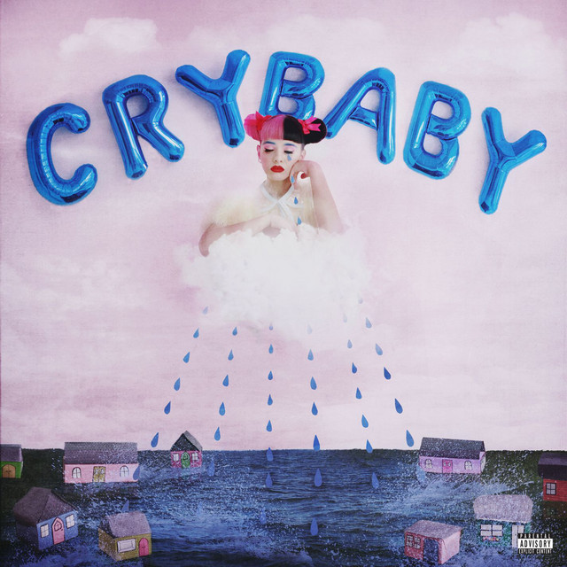
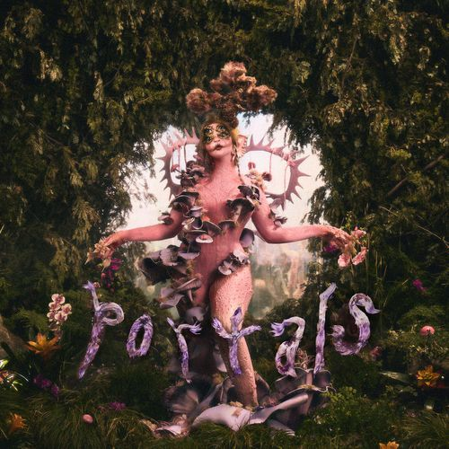
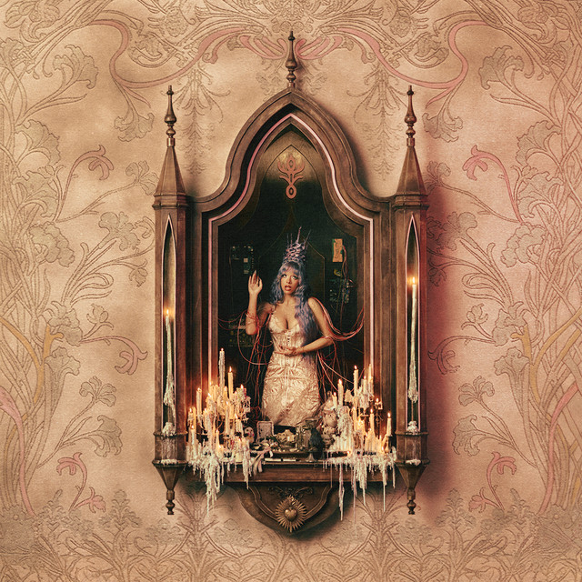

Cry Baby is Melanie Martinez's debut studio album. It was released on August 14th 2015. The album has songs such as Cry Baby, Carousel, and Training Wheels. This album marks the beginning of the "Cry Baby Trilogy". There were characters in this album. One of the main ones was the antagonist: The Big Bad Wolf. That's what she's escaping from in this album.
K-12 is Melanie Martinez's sophmore album. It was released on September 6th 2019. This album has songs such as Nurse's Office, and Recess. Fun fact: This album also had a film directed for it. It was kind of like a musical, since it featured all the songs from the album. She is escaping from the K-12 Sleepaway School in this era.

Portals is Melanie Martinez's third studio album. This album was released on March 31st 2023. There are some huge songs on this album, such as VOID, SPIDER WEB, and EVIL. When this era ended on October 11th 2025, it also marked the end of the 10 year "Cry Baby Trilogy". She is escaping the void in this world.

HADES is Melanie Martinez's latest album (as of 30/07/2026). It was released on March 27th 2026. This album features a brand new character, "Circle". The album is themed around a dystopian world, featuring songs with big themes, such as GUTTER, which talks about homelessness, and HELL'S FRONT PORCH, talking about climate change. She is escaping from Hades Tech.